Applications
Fonctions entre ensembles : image, antécédent, composition, puis les trois notions centrales — injection, surjection, bijection — avec la bijection réciproque et le calcul des images directes et réciproques.
1. Résumé de cours détaillé
1.1 Application, image, antécédent
1.2 Restriction, prolongement, composition
1.3 Injection, surjection, bijection
- Stricte monotonie sur \(I\subseteq\mathbb R\) \(\Rightarrow\) injective.
- Composées : \(f,g\) inj. \(\Rightarrow g\circ f\) inj. ; \(f,g\) surj. \(\Rightarrow g\circ f\) surj. Si \(g\circ f\) inj. alors \(f\) inj. ; si \(g\circ f\) surj. alors \(g\) surj.
- \(f,g\) bij. \(\Rightarrow g\circ f\) bij. et \((g\circ f)^{-1}=f^{-1}\circ g^{-1}\) (on « inverse dans l'ordre »).
- \((f^{-1})^{-1}=f\).
1.4 Image directe, image réciproque
2. Exercices d'entraînement (créés) avec corrections
1) Bijection, image \(J\) et réciproque
On résout l'équation \(y=f(x)\) d'inconnue \(x\), pour \(y\) fixé.
Étape 1 : chasser le dénominateur
Soit \(y\in\mathbb R\) et \(x\neq -2\).
\[ \frac{3x+1}{x+2}=y \iff 3x+1=y(x+2) \]Étape 2 : isoler \(x\)
\[ 3x-yx=2y-1 \iff x(3-y)=2y-1 \]Étape 3 : discuter selon \(y\)
- Si \(y\neq 3\) : une seule solution, \(x=\dfrac{2y-1}{3-y}\). Elle vérifie bien \(x\neq -2\) (sinon \(2y-1=-6+2y\), soit \(-1=-6\), faux).
- Si \(y=3\) : l'équation devient \(0=5\), aucune solution.
Étape 4 : conclure
Les valeurs atteintes sont tous les réels sauf 3, chacune une seule fois.
Cohérence : \(y=3\) est l'asymptote horizontale de \(f\), et \(-2\) l'asymptote verticale ; elles s'échangent pour \(f^{-1}\).
1) Égalité pour la réunion
On raisonne par équivalences, élément par élément.
Étape 1 : traduire
Soit \(y\in F\).
\[ y\in f(A\cup B)\iff \exists x\in A\cup B,\ y=f(x) \]Étape 2 : séparer selon \(x\in A\) ou \(x\in B\)
\[ \iff (\exists x\in A,\ y=f(x))\ \text{ou}\ (\exists x\in B,\ y=f(x)) \iff y\in f(A)\cup f(B) \]2) Inclusion pour l'intersection
Étape 1 : « soit \(y\) »
Soit \(y\in f(A\cap B)\) : il existe \(x\in A\cap B\) tel que \(y=f(x)\).
Étape 2 : utiliser les deux appartenances
- \(x\in A\), donc \(y\in f(A)\).
- \(x\in B\), donc \(y\in f(B)\).
3) Contre-exemple à l'égalité
Étape 1 : choisir une fonction non injective
\(f:\mathbb R\to\mathbb R\), \(f(x)=x^2\), avec \(A=\mathbb R_-\) et \(B=\mathbb R_+\).
Étape 2 : calculer les deux membres
\[ A\cap B=\{0\} \;\Longrightarrow\; f(A\cap B)=\{0\} \] \[ f(A)=f(B)=\mathbb R_+ \;\Longrightarrow\; f(A)\cap f(B)=\mathbb R_+ \]1) Expression de \(f^{\circ n}\)
Étape 1 : calculer \(f\circ f\) pour conjecturer
Avec \(u=f(x)\) : \(1+u^2=1+\dfrac{x^2}{1+x^2}=\dfrac{1+2x^2}{1+x^2}\), donc
\[ f\circ f(x)=\frac{u}{\sqrt{1+u^2}}=\frac{x}{\sqrt{1+x^2}}\times\sqrt{\frac{1+x^2}{1+2x^2}}=\frac{x}{\sqrt{1+2x^2}} \]Conjecture : \(f^{\circ n}(x)=\dfrac{x}{\sqrt{1+nx^2}}\). On la démontre par récurrence.
Étape 2 : initialisation (\(n=1\))
\(f^{\circ 1}(x)=\dfrac{x}{\sqrt{1+x^2}}\) : c'est la formule pour \(n=1\).
Étape 3 : hérédité, calculer \(1+u^2\)
On suppose \(f^{\circ n}(x)=\dfrac{x}{\sqrt{1+nx^2}}\) et on pose \(u=f^{\circ n}(x)\).
\[ 1+u^2=1+\frac{x^2}{1+nx^2}=\frac{1+(n+1)x^2}{1+nx^2} \]Étape 4 : hérédité, appliquer \(f\)
\[ f^{\circ(n+1)}(x)=f(u)=\frac{u}{\sqrt{1+u^2}}=\frac{x}{\sqrt{1+nx^2}}\times\sqrt{\frac{1+nx^2}{1+(n+1)x^2}}=\frac{x}{\sqrt{1+(n+1)x^2}} \]3. Correction intégrale du TD n°3 — Applications
Feuille sans corrigé officiel : les 14 exercices sont résolus intégralement, chaque sous-question traitée.
Partie 1 — Éléments fondamentaux
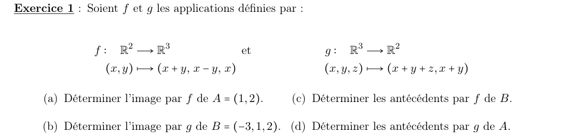
a) Image de \(A=(1,2)\) par \(f\)
Étape 1 : remplacer \(x=1\), \(y=2\)
\[ f(1,2)=(1+2,\ 1-2,\ 1) \]b) Image de \(B=(-3,1,2)\) par \(g\)
Étape 1 : remplacer \(x=-3\), \(y=1\), \(z=2\)
\[ g(-3,1,2)=(-3+1+2,\ -3+1) \]c) Antécédents de \(B=(-3,1,2)\) par \(f\)
Étape 1 : écrire le système
\[ x+y=-3,\qquad x-y=1,\qquad x=2 \]Étape 2 : résoudre
La 3ᵉ équation donne \(x=2\), la 1ʳᵉ donne \(y=-5\).
Étape 3 : vérifier la 2ᵉ équation
\[ x-y=2-(-5)=7\neq 1 \]d) Antécédents de \(A=(1,2)\) par \(g\)
Étape 1 : écrire le système
\[ x+y+z=1,\qquad x+y=2 \]Étape 2 : résoudre
On soustrait : \(z=1-2=-1\). Puis \(y=2-x\), avec \(x\) libre.
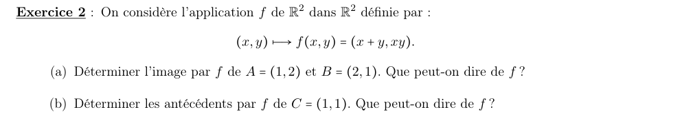
a) Images de \(A=(1,2)\) et \(B=(2,1)\)
Étape 1 : calculer
\[ f(1,2)=(3,2) \qquad f(2,1)=(3,2) \]Étape 2 : conclure sur l'injectivité
b) Antécédents de \(C=(1,1)\)
Étape 1 : le système
\[ x+y=1,\qquad xy=1 \]Étape 2 : somme et produit
Pas de racine réelle : pas de couple \((x,y)\).
Partie 2 — Restriction, prolongement, composée
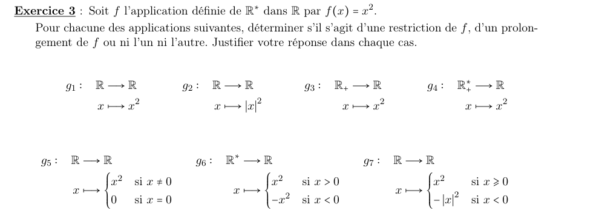
a) \(g_1:\mathbb R\to\mathbb R,\ x\mapsto x^2\)
Étape 1 : comparer les domaines
\(\mathbb R\supseteq\mathbb R^*\).
Étape 2 : comparer les valeurs sur \(\mathbb R^*\)
\(g_1(x)=x^2=f(x)\).
b) \(g_2:\mathbb R\to\mathbb R,\ x\mapsto |x|^2\)
Étape 1 : simplifier
\(|x|^2=x^2\) : \(g_2=g_1\).
c) \(g_3:\mathbb R_+\to\mathbb R,\ x\mapsto x^2\)
Étape 1 : comparer les domaines
- \(0\in\mathbb R_+\) mais \(0\notin\mathbb R^*\) : \(\mathbb R_+\not\subseteq\mathbb R^*\), ce n'est pas une restriction.
- \(-1\in\mathbb R^*\) mais \(-1\notin\mathbb R_+\) : \(\mathbb R_+\not\supseteq\mathbb R^*\), ce n'est pas un prolongement.
d) \(g_4:\mathbb R^*_+\to\mathbb R,\ x\mapsto x^2\)
Étape 1 : comparer domaines et valeurs
\(\mathbb R^*_+\subseteq\mathbb R^*\) et \(g_4(x)=x^2=f(x)\).
e) \(g_5:\mathbb R\to\mathbb R,\ x\mapsto x^2\) si \(x\neq0\), \(0\) si \(x=0\)
Étape 1 : comparer domaines et valeurs
\(\mathbb R\supseteq\mathbb R^*\), et sur \(\mathbb R^*\), \(g_5(x)=x^2\).
f) \(g_6:\mathbb R^*\to\mathbb R,\ x\mapsto x^2\) si \(x>0\), \(-x^2\) si \(x<0\)
Étape 1 : comparer les valeurs
Même domaine, mais \(g_6(-1)=-1\neq 1=f(-1)\).
g) \(g_7:\mathbb R\to\mathbb R,\ x\mapsto x^2\) si \(x\geqslant0\), \(-|x|^2\) si \(x<0\)
Étape 1 : comparer les valeurs sur \(\mathbb R^*\)
Pour \(x<0\), \(g_7(x)=-x^2\neq x^2\).
a) \(g\circ f:\mathbb R^2\to\mathbb R^2\)
Étape 1 : calculer \(f(x,y)\)
\[ f(x,y)=(x+y,\ x-y,\ x) \]Étape 2 : appliquer \(g\) (somme des 3, somme des 2 premières)
\[ g\circ f(x,y)=\big((x+y)+(x-y)+x,\ (x+y)+(x-y)\big) \]b) \(f\circ g:\mathbb R^3\to\mathbb R^3\)
Étape 1 : calculer \(g(x,y,z)\)
On note \(a=x+y+z\) et \(b=x+y\).
Étape 2 : appliquer \(f\)
\[ f(a,b)=(a+b,\ a-b,\ a)=\big(2x+2y+z,\ z,\ x+y+z\big) \]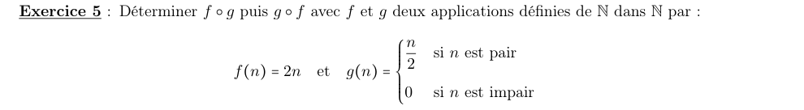
a) \(f\circ g\)
Étape 1 : \(f\circ g(n)=2\,g(n)\), on distingue la parité
- \(n\) pair : \(2\times\dfrac n2=n\).
- \(n\) impair : \(2\times 0=0\).
b) \(g\circ f\)
Étape 1 : \(g\circ f(n)=g(2n)\)
\(2n\) est toujours pair, donc \(g(2n)=\dfrac{2n}{2}=n\).
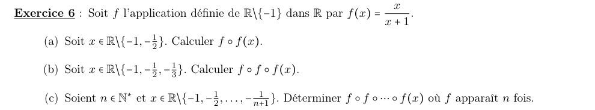
a) \(f\circ f(x)\)
Étape 1 : calculer \(f(x)+1\)
\[ f(x)+1=\frac{x}{x+1}+1=\frac{2x+1}{x+1} \]Étape 2 : appliquer \(f\) à \(f(x)\)
\[ f\circ f(x)=\frac{f(x)}{f(x)+1}=\frac{x}{x+1}\times\frac{x+1}{2x+1} \]b) \(f\circ f\circ f(x)\)
Étape 1 : poser \(u=f\circ f(x)\)
\[ u+1=\frac{x}{2x+1}+1=\frac{3x+1}{2x+1} \]Étape 2 : appliquer \(f\)
\[ f(u)=\frac{u}{u+1}=\frac{x}{2x+1}\times\frac{2x+1}{3x+1} \]c) \(f^{\circ n}(x)\)
Étape 1 : conjecture
Les résultats \(\dfrac{x}{x+1}\), \(\dfrac{x}{2x+1}\), \(\dfrac{x}{3x+1}\) suggèrent \(f^{\circ n}(x)=\dfrac{x}{nx+1}\). On raisonne par récurrence.
Étape 2 : initialisation
Pour \(n=1\), c'est la définition de \(f\).
Étape 3 : hérédité
On suppose la formule vraie au rang \(n\) et on pose \(v=\dfrac{x}{nx+1}\) :
\[ v+1=\frac{(n+1)x+1}{nx+1} \qquad\Longrightarrow\qquad f(v)=\frac{v}{v+1}=\frac{x}{(n+1)x+1} \]Partie 3 — Injectivité, surjectivité, bijectivité
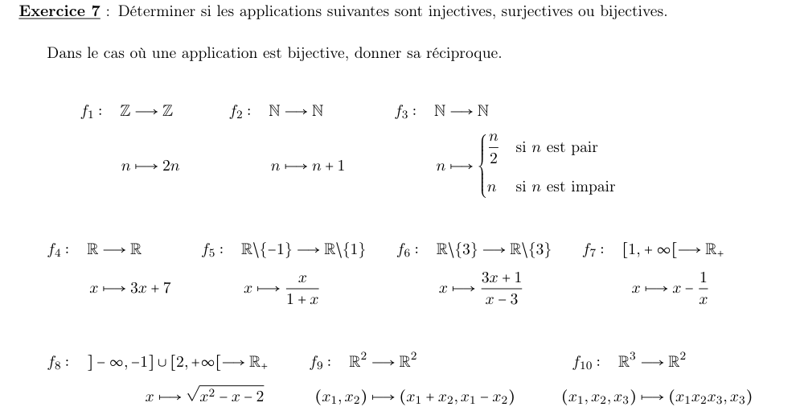
a) \(f_1:\mathbb Z\to\mathbb Z,\ n\mapsto 2n\)
Surjective : tout élément de l'arrivée a au moins un antécédent.
Bijective : les deux.
Étape 1 : injectivité
\(2n=2m\Rightarrow n=m\) : injective.
Étape 2 : surjectivité
\(2n=1\) donne \(n=\tfrac12\notin\mathbb Z\) : 1 n'a pas d'antécédent.
b) \(f_2:\mathbb N\to\mathbb N,\ n\mapsto n+1\)
Étape 1 : injectivité
\(n+1=m+1\Rightarrow n=m\).
Étape 2 : surjectivité
\(n+1=0\) donne \(n=-1\notin\mathbb N\) : 0 n'a pas d'antécédent.
c) \(f_3:\mathbb N\to\mathbb N,\ n\mapsto \tfrac n2\) si pair, \(n\) si impair
Étape 1 : injectivité
\(f_3(1)=1\) et \(f_3(2)=1\) : non injective.
Étape 2 : surjectivité
Pour tout \(k\in\mathbb N\), \(2k\) est pair et \(f_3(2k)=k\).
d) \(f_4:\mathbb R\to\mathbb R,\ x\mapsto 3x+7\)
Étape 1 : résoudre \(y=3x+7\)
Pour tout \(y\in\mathbb R\), une seule solution :
\[ x=\frac{y-7}{3} \]e) \(f_5:\mathbb R\setminus\{-1\}\to\mathbb R\setminus\{1\},\ x\mapsto \dfrac{x}{1+x}\)
Étape 1 : résoudre \(y=\dfrac{x}{1+x}\) pour \(y\neq 1\)
\[ y+yx=x \iff x(1-y)=y \iff x=\frac{y}{1-y} \]Étape 2 : vérifier que \(x\neq -1\)
\(\dfrac{y}{1-y}=-1\) donnerait \(y=y-1\), impossible.
f) \(f_6:\mathbb R\setminus\{3\}\to\mathbb R\setminus\{3\},\ x\mapsto \dfrac{3x+1}{x-3}\)
Étape 1 : résoudre \(y=\dfrac{3x+1}{x-3}\) pour \(y\neq 3\)
\[ yx-3y=3x+1 \iff x(y-3)=3y+1 \iff x=\frac{3y+1}{y-3} \]Étape 2 : comparer à \(f_6\)
On retrouve la même formule que \(f_6\).
g) \(f_7:[1,+\infty[\to\mathbb R_+,\ x\mapsto \dfrac{x-1}{x}\)
Étape 1 : variations
\(f_7(x)=1-\dfrac1x\) et \(f_7'(x)=\dfrac1{x^2}>0\) : strictement croissante, donc injective.
Étape 2 : image
\(f_7(1)=0\) et \(f_7(x)\to 1\) sans l'atteindre : image \([0,1[\neq\mathbb R_+\).
h) \(f_8:\,]-\infty,-1]\cup[2,+\infty[\to\mathbb R_+,\ x\mapsto\sqrt{x^2-x-2}\)
Étape 1 : résoudre \(y=f_8(x)\) pour \(y\geqslant 0\)
\[ y^2=x^2-x-2 \iff x^2-x-(2+y^2)=0 \]Étape 2 : discriminant
\[ \Delta=1+4(2+y^2)=9+4y^2>0 \qquad x=\frac{1\pm\sqrt{9+4y^2}}{2} \]Étape 3 : les deux racines sont dans le domaine
\(\sqrt{9+4y^2}\geqslant 3\), donc \(x_+\geqslant 2\) et \(x_-\leqslant -1\).
i) \(f_9:\mathbb R^2\to\mathbb R^2,\ (x_1,x_2)\mapsto(x_1+x_2,\ x_1-x_2)\)
Étape 1 : résoudre le système
\[ y_1=x_1+x_2,\quad y_2=x_1-x_2 \]On additionne puis on soustrait :
\[ x_1=\frac{y_1+y_2}{2},\qquad x_2=\frac{y_1-y_2}{2} \]j) \(f_{10}:\mathbb R^3\to\mathbb R^2,\ (x_1,x_2,x_3)\mapsto(x_1x_2x_3,\ x_3)\)
Étape 1 : injectivité
\(f_{10}(1,1,0)=(0,0)=f_{10}(2,3,0)\) : non injective.
Étape 2 : surjectivité
\((1,0)\) exigerait \(x_3=0\) et \(x_1x_2x_3=1\), impossible.
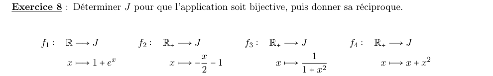
a) \(f_1:\mathbb R\to J,\ x\mapsto 1+e^x\)
Étape 1 : image
\(e^x\) parcourt \(]0,+\infty[\), donc \(1+e^x\) parcourt \(]1,+\infty[\).
Étape 2 : résoudre
\[ y=1+e^x \iff e^x=y-1 \iff x=\ln(y-1) \]b) \(f_2:\mathbb R_+\to J,\ x\mapsto -\dfrac x2-1\)
Étape 1 : image
Fonction affine décroissante : \(f_2(0)=-1\) et \(f_2(x)\to-\infty\).
Étape 2 : résoudre
\[ y=-\frac x2-1 \iff x=-2(y+1) \]c) \(f_3:\mathbb R_+\to J,\ x\mapsto \dfrac{1}{1+x^2}\)
Étape 1 : image
Sur \(\mathbb R_+\), décroissante : \(f_3(0)=1\), et \(f_3(x)\to 0\) sans l'atteindre.
Étape 2 : résoudre pour \(y\in\,]0,1]\)
\[ y=\frac{1}{1+x^2} \iff x^2=\frac{1-y}{y} \iff x=\sqrt{\frac{1-y}{y}} \quad(\text{car } x\geqslant 0) \]d) \(f_4:\mathbb R_+\to J,\ x\mapsto x+x^2\)
Étape 1 : image
Sur \(\mathbb R_+\), croissante de 0 à \(+\infty\).
Étape 2 : résoudre \(x^2+x-y=0\)
\[ \Delta=1+4y \qquad x=\frac{-1+\sqrt{1+4y}}{2} \quad(\text{seule racine positive}) \]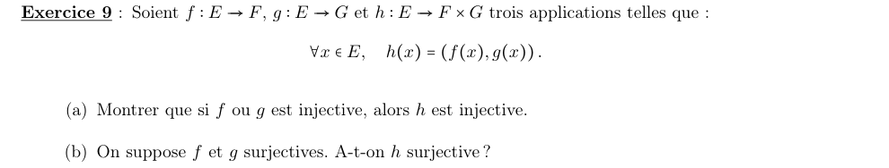
a) Si \(f\) ou \(g\) est injective, alors \(h\) est injective
Étape 1 : partir de \(h(x)=h(x')\)
On suppose \(f\) injective. Si \(h(x)=h(x')\), alors \((f(x),g(x))=(f(x'),g(x'))\).
Étape 2 : égalité de couples
En particulier \(f(x)=f(x')\), donc \(x=x'\) par injectivité de \(f\). Le cas \(g\) injective se traite avec la 2ᵉ composante.
b) \(f\) et \(g\) surjectives : \(h\) est-elle surjective ?
Étape 1 : contre-exemple
\(E=F=G=\mathbb R\) et \(f=g=\operatorname{Id}_{\mathbb R}\), toutes deux surjectives. Alors \(h(x)=(x,x)\).
Étape 2 : un point non atteint
\((0,1)=h(x)\) demanderait \(x=0\) et \(x=1\).
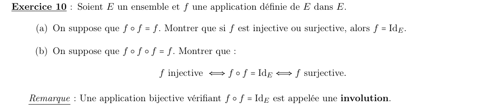
a) \(f\circ f=f\) : si \(f\) est injective ou surjective, alors \(f=\operatorname{Id}_E\)
On traite les deux cas.
Étape 1 : cas \(f\) injective
Pour tout \(x\), \(f\big(f(x)\big)=f(x)\). L'injectivité permet d'« enlever » le \(f\) extérieur : \(f(x)=x\).
Étape 2 : cas \(f\) surjective
Soit \(y\in E\). Il existe \(x\) tel que \(y=f(x)\). Alors :
\[ f(y)=f\big(f(x)\big)=f(x)=y \]b) \(f\circ f\circ f=f\) : \(f\) injective \(\iff f\circ f=\operatorname{Id}_E\iff f\) surjective
On montre une boucle d'implications, puis on la referme dans l'autre sens.
Étape 1 : \(f\) injective \(\Rightarrow f\circ f=\operatorname{Id}\)
\(f\big(f(f(x))\big)=f(x)\), et l'injectivité donne \(f(f(x))=x\).
Étape 2 : \(f\circ f=\operatorname{Id}\Rightarrow f\) surjective
Tout \(y\) s'écrit \(y=f\big(f(y)\big)\) : il a pour antécédent \(f(y)\).
Étape 3 : \(f\) surjective \(\Rightarrow f\circ f=\operatorname{Id}\)
Soit \(x\in E\) ; il existe \(a\) tel que \(x=f(a)\). Alors :
\[ f\big(f(x)\big)=f\big(f(f(a))\big)=f(a)=x \]Étape 4 : \(f\circ f=\operatorname{Id}\Rightarrow f\) injective
Si \(f(x)=f(x')\), on applique \(f\) : \(f(f(x))=f(f(x'))\), soit \(x=x'\).
Partie 4 — Images directes et réciproques
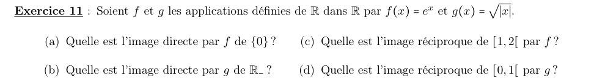
a) Image directe par \(f\) de \(\{0\}\)
Étape 1 : calculer
\[ e^0=1 \]b) Image directe par \(g\) de \(\mathbb R_-\)
Étape 1 : suivre les valeurs
Pour \(x\leqslant 0\), \(|x|=-x\) parcourt \([0,+\infty[\), puis \(\sqrt{|x|}\) parcourt \([0,+\infty[\).
c) Image réciproque de \([1,2[\) par \(f\)
Étape 1 : résoudre l'encadrement
\(\ln\) est strictement croissante :
\[ 1\leqslant e^x<2 \iff 0\leqslant x<\ln 2 \]d) Image réciproque de \([0,1[\) par \(g\)
Étape 1 : résoudre l'encadrement
\[ 0\leqslant\sqrt{|x|}<1 \iff |x|<1 \]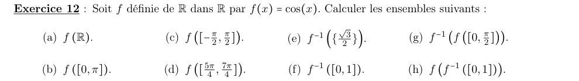
a) \(f(\mathbb R)\)
Étape 1 : valeurs prises par \(\cos\)
\(\cos\) prend toutes les valeurs entre \(-1\) et \(1\).
b) \(f([0,\pi])\)
Étape 1 : variations
Sur \([0,\pi]\), \(\cos\) décroît de \(\cos 0=1\) à \(\cos\pi=-1\).
c) \(f\!\left([-\tfrac\pi2,\tfrac\pi2]\right)\)
Étape 1 : variations
\(\cos\) croît de 0 à 1 sur \([-\tfrac\pi2,0]\), puis décroît de 1 à 0 sur \([0,\tfrac\pi2]\).
d) \(f\!\left([\tfrac{5\pi}4,\tfrac{7\pi}4]\right)\)
Étape 1 : variations
\([\tfrac{5\pi}4,\tfrac{7\pi}4]\subseteq[\pi,2\pi]\), où \(\cos\) est croissant.
Étape 2 : valeurs aux bornes
\[ \cos\frac{5\pi}4=-\frac{\sqrt2}2 \qquad \cos\frac{7\pi}4=\frac{\sqrt2}2 \]e) \(f^{-1}\!\left(\left\{\tfrac{\sqrt3}2\right\}\right)\)
Étape 1 : reconnaître une valeur remarquable
\(\cos\dfrac\pi6=\dfrac{\sqrt3}2\).
f) \(f^{-1}([0,1])\)
Étape 1 : où \(\cos\) est-il positif ?
Sur \([-\tfrac\pi2,\tfrac\pi2]\), puis sur ses translatés de \(2k\pi\).
g) \(f^{-1}\!\left(f\!\left([0,\tfrac\pi2]\right)\right)\)
Étape 1 : image directe
\(\cos\) décroît de 1 à 0 sur \([0,\tfrac\pi2]\) : \(f([0,\tfrac\pi2])=[0,1]\).
Étape 2 : image réciproque
C'est \(f^{-1}([0,1])\), calculé en f).
h) \(f\!\left(f^{-1}([0,1])\right)\)
Étape 1 : appliquer \(\cos\) à l'ensemble trouvé en f)
Sur chaque intervalle \(\left[-\tfrac\pi2+2k\pi,\ \tfrac\pi2+2k\pi\right]\), \(\cos\) prend toutes les valeurs de \([0,1]\).
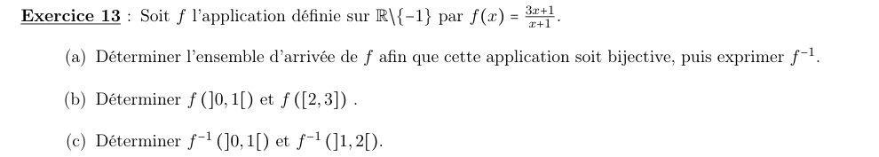
a) Ensemble d'arrivée rendant \(f\) bijective, et \(f^{-1}\)
Étape 1 : résoudre \(y=f(x)\)
\[ y(x+1)=3x+1 \iff x(y-3)=1-y \]Étape 2 : discuter
- \(y\neq 3\) : une seule solution \(x=\dfrac{1-y}{y-3}\), différente de \(-1\) (sinon \(1-y=3-y\), faux).
- \(y=3\) : \(0=-2\), aucune solution.
b) \(f(]0,1[)\) et \(f([2,3])\)
Étape 1 : variations
\[ f'(x)=\frac{3(x+1)-(3x+1)}{(x+1)^2}=\frac{2}{(x+1)^2}>0 \]\(f\) est strictement croissante sur \(]-1,+\infty[\), qui contient \(]0,1[\) et \([2,3]\).
Étape 2 : valeurs aux bornes
\[ f(0)=1,\quad f(1)=2,\quad f(2)=\frac73,\quad f(3)=\frac{10}{4}=\frac52 \]c) \(f^{-1}(]0,1[)\) et \(f^{-1}(]1,2[)\)
Étape 1 : la branche \(x<-1\) ne compte pas
\(f(x)=3-\dfrac{2}{x+1}\). Pour \(x<-1\), \(-\dfrac{2}{x+1}>0\), donc \(f(x)>3\) : aucune valeur dans \(]0,2[\).
Étape 2 : sur \(]-1,+\infty[\), \(f\) est croissante
On résout aux bornes : \(f(x)=0\iff x=-\tfrac13\) ; \(f(x)=1\iff x=0\) ; \(f(x)=2\iff x=1\).
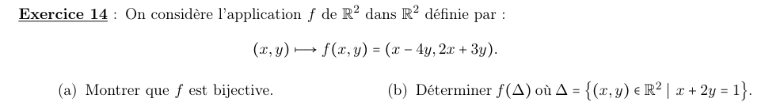
a) \(f\) est bijective
On résout \(f(x,y)=(a,b)\) pour \((a,b)\) quelconque.
Étape 1 : le système
\[ x-4y=a,\qquad 2x+3y=b \]Étape 2 : éliminer \(x\)
\(L_2-2L_1\) : \(11y=b-2a\), donc \(y=\dfrac{b-2a}{11}\), puis \(x=a+4y=\dfrac{3a+4b}{11}\).
Étape 3 : conclure
Pour tout \((a,b)\), une solution et une seule. (Autre lecture : le déterminant \(1\times3-(-4)\times2=11\) est non nul.)
b) \(f(\Delta)\) avec \(\Delta=\{(x,y)\mid x+2y=1\}\)
Étape 1 : paramétrer \(\Delta\)
\(x=1-2y\), avec \(y\in\mathbb R\).
Étape 2 : calculer l'image
\[ f(1-2y,\ y)=\big((1-2y)-4y,\ 2(1-2y)+3y\big)=(1-6y,\ 2-y) \]Étape 3 : éliminer le paramètre
On pose \(X=1-6y\) et \(Y=2-y\). Alors \(y=2-Y\), et :
\[ X=1-6(2-Y)=6Y-11 \]Chapitre 3 du cours M01 (S1). Sources : Chap_3.pdf (cours magistral) et TD03 — Applications. Corrigé rédigé intégralement (pas de corrigé officiel fourni).
📂 Documents donnés
Tous les documents originaux liés à ce chapitre (cours magistral, TD, corrigés…). Cliquez pour ouvrir le PDF.
Cours (CM)
TD (énoncé)
Les documents sont inclus dans ce dossier (sous-dossier documents\) — le paquet est autonome et partageable tel quel.